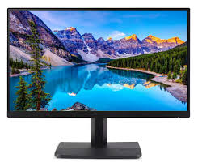

Goals:
- Identify various input and output devices.
- Understand the role of these devices in a computer system.
Input Devices:
Input devices are peripherals used to provide data and control signals to a computer. Examples include:
- Keyboard: Used to input text and commands.
- Mouse: A pointing device that detects two-dimensional motion.
- Scanner: Converts physical documents into digital format.
- Microphone: Captures audio input.
- Webcam: Captures video input.
- Joystick: Used for gaming and simulations.

Examples of Input Devices
Output Devices:
Output devices receive data from a computer and translate it into a form understandable by humans. Examples include:
- Monitor: Displays visual output from the computer.
- Printer: Produces a hard copy of digital documents.
- Speakers: Output audio signals as sound.
- Headphones: Personal audio output device.
- Projector: Projects visual output onto a surface.

Examples of Output Devices
What's Inside a Computer Case:
The internal components of a computer case include:
- CPU (Central Processing Unit): The brain of the computer, responsible for executing instructions.
- Motherboard: The main circuit board that connects all components and peripherals.
- RAM (Random Access Memory): Volatile memory used to store data for currently running programs.
- PSU (Power Supply Unit): Converts electrical power from an outlet to usable power for the computer's components.
- HDD/SSD (Hard Disk Drive/Solid State Drive): Non-volatile storage devices for the computer's operating system, software, and data.
- GPU (Graphics Processing Unit): Specialized processor for rendering graphics.
- Cooling Systems: Fans and heat sinks used to dissipate heat from components.
- PCIe Slots: Expansion slots for additional cards like graphics cards, network cards, etc.
- SATA Connections: Interfaces for connecting storage devices and optical drives.
- Power Connectors: Provide power to the motherboard, CPU, and other components.
Inside a Computer Case
Activity: Assembling and Disassembling a Computer
Guide students through the process of safely assembling and disassembling a computer to understand how components fit and work together.
Quiz
1. What is the main function of the CPU in a computer?
- A. To store data
- B. To execute instructions
- C. To provide power
- D. To cool the computer
2. Which device is used to capture audio input?
- A. Monitor
- B. Keyboard
- C. Microphone
- D. Printer